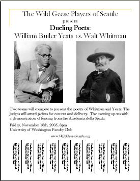

![[Goose]](./images/goose.gif)
|  |
|
|
Press Release
The Wild Geese Players of Seattle present a fun-filled evening of Dueling Poets!
Nobel prize winner William Butler Yeats' verses will compete with the verse of New World pretender, Walt Whitman! The Yeats team is in the capable hands of Dramaturg Ciaran O'Mahony, and includes Bill Barnes, Lynn Carrigan, Joe Martin, and George Reilly, and Helen Anne ?. The plucky Whitman team Dramaturg is Scott Mc Kinstry, aided by Michael Green, Nancy Mills, Kieran O'Malley, Emma Bartholomew, and A.N. Other!!
The poetry and dramatic presentations will be judged by an estimable panel of experts led by Frank Maloney.
We have invited fencers from the Academia della Spada to begin the event with a dueling demonstration. The Academia della Spada, formed in Seattle in 1999 by Academy Master Cecil Longino, teaches 16th century sword-fighting techniques from early fighting manuals and treatises. For more information on their rapier and backsword curricula and classes, see their website at www.academiadellaspada.com.
All this, and more, will take place on:
Friday November 18th at 8pm
University of Washington Faculty Club,
Colleen Rohrbaugh room (formerly Music room)
(Map) (Park in N6).
Pre-show musical entertainment by Lyndol Pullen!
Post-show reception, with Guinness, Harp, Irish coffee, and craic!
Donations for the Wild Geese will gratefully be accepted at the door
Feel free to download and post our flyer (1.1MB). You may need to download the free Adobe Acrobat Reader to print the flyer.